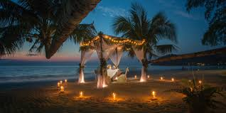

Bora Bora, Polinesia Francesa: Con sus aguas cristalinas, bungalows sobre el agua y puestas de sol inolvidables, Bora Bora es un destino de ensueño para las parejas en busca de romance y privacidad. Santorini, Grecia: Con sus icónicas casas blancas y azules sobre acantilados volcánicos, Santorini ofrece vistas panorámicas impresionantes, atardeceres románticos y una vibrante escena gastronómica. Venecia, Italia: Con sus canales serpenteantes, góndolas y arquitectura renacentista, Venecia es el escenario perfecto para una escapada romántica llena de historia, arte y cultura italiana.
